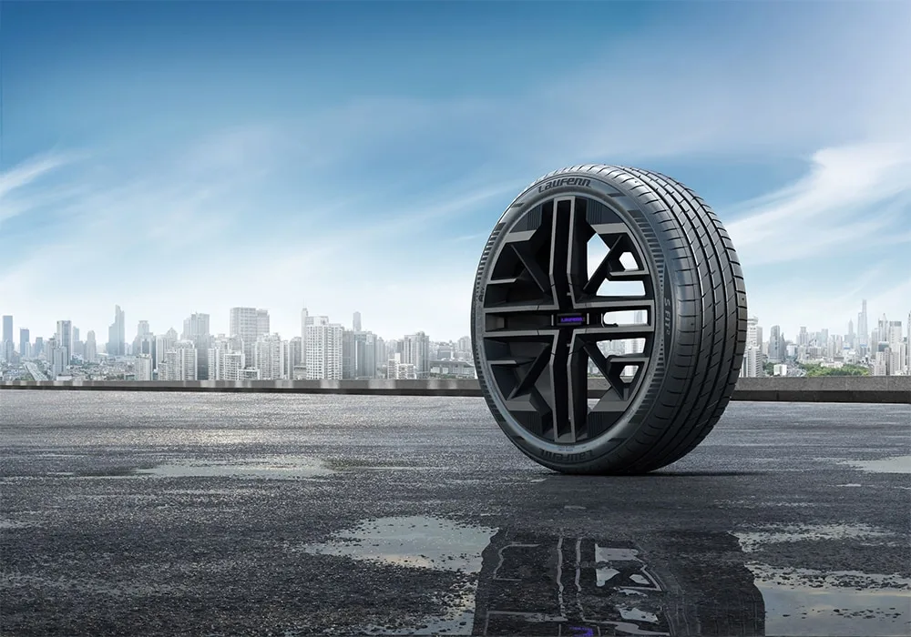
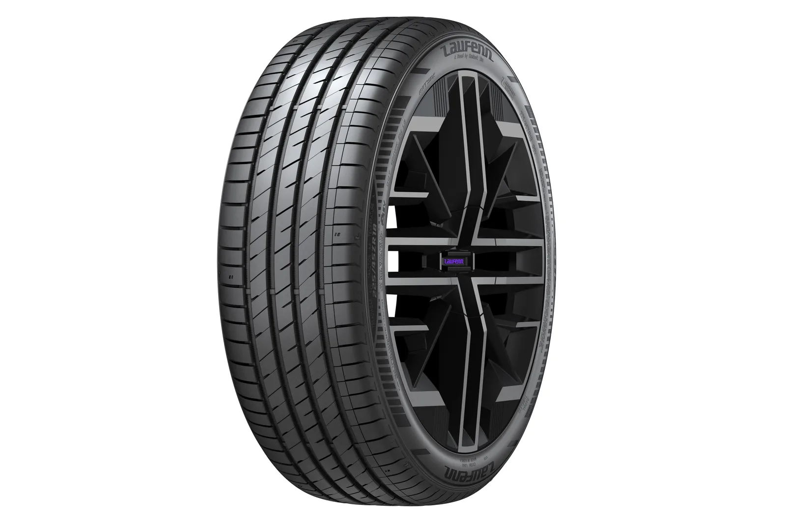

▲ 폭스바겐그룹 산하 세아트의 준중형 해치백 레온. 한국타이어 라우펜의 'S FIT2'가 이 차의 신차용 타이어로 공급된다
1. 라우펜, 세아트 레온의 신차용 타이어로 공급 결정
한국타이어앤테크놀로지의 글로벌 세컨드 브랜드 '라우펜(Laufenn)'이 스페인 완성차 브랜드 세아트(SEAT)의 준중형 모델 '레온(Leon)'에 신차용 타이어를 공급한다고 밝혔다. 공급 제품은 2세대 여름용 퍼포먼스 타이어 'S FIT2'로, 205/55R16과 225/40R18 두 가지 규격이 적용된다. 한국타이어는 "레온의 실용성과 스포티한 주행 특성을 고려해 최적화된 신차용 타이어를 공급하기로 했다"고 설명했다.
▲ 세아트 레온 후측면. 폭스바겐 골프와 플랫폼을 공유하는 준중형 해치백으로, 스포티한 주행 감각을 앞세운 모델이다 ⓒ Wikimedia Commons
2. S FIT2, 무엇이 다른가
S FIT2는 유럽 시장을 겨냥해 개발된 라우펜의 차세대 여름용 퍼포먼스 타이어다. 고함량 실리카 컴파운드와 최적화된 트레드 블록 설계를 통해 젖은 노면 제동거리를 기존 제품 대비 약 16% 단축했고, 4개의 넓은 직선형 그루브로 배수 성능을 강화했다. 여기에 차세대 폴리머 컴파운드를 적용해 마일리지(내구성)를 약 15% 향상시켰으며, 주행 중 발생하는 진동과 소음을 줄여 쾌적한 승차감을 제공하는 것이 특징이다. 15~20인치까지 총 94가지 사이즈로 출시되며, SUV 전용 모델인 'S FIT2 SUV'는 16~20인치 20가지 사이즈로 별도 공급된다.
📍 신차용 타이어(OE)란
OE(Original Equipment) 타이어는 완성차 제조사가 신차 생산 단계에서 직접 장착하는 '순정' 타이어를 말한다. 완성차 업체는 자사 차량의 서스펜션 세팅과 주행 특성에 맞춰 수개월에서 수년에 걸친 정밀 테스트를 거친 뒤 OE 타이어를 선정하기 때문에, OE로 채택됐다는 사실 자체가 국제적인 품질 신뢰도를 인증받았다는 의미로 통한다. 교체용 타이어(RE) 시장과 달리 OE 시장은 진입 장벽이 높아, 한 번 공급사로 선정되면 후속 모델이나 페이스리프트 모델에서도 이어질 가능성이 크다.
3. 세아트 레온은 어떤 차
레온은 1999년부터 이어져 온 세아트의 대표 준중형차로, 폭스바겐그룹의 MQB 플랫폼을 공유하는 골프의 남매 차종이다. 2020년 공개된 4세대 모델부터는 해치백과 스포츠투어러(왜건) 두 가지 차체로 판매되며, 3도어 모델은 단종됐다. 폭스바겐 골프보다 상대적으로 합리적인 가격에 스포티한 주행 감각을 앞세운 포지셔닝으로 유럽 준중형 시장에서 꾸준한 판매를 유지하고 있으며, 고성능 버전인 쿠프라(CUPRA) 라인업으로도 확장돼 왔다.
| 항목 | 내용 |
|---|---|
| 공급 제품 | 라우펜 S FIT2(2세대 여름용 퍼포먼스 타이어) |
| 공급 규격 | 205/55R16, 225/40R18 |
| 젖은 노면 제동 | 기존 제품 대비 약 16% 단축 |
| 마일리지 | 기존 제품 대비 약 15% 향상 |
| 전체 사이즈 구성 | 15~20인치 94종(SUV 전용 별도 20종) |

▲ 라우펜의 차세대 여름용 타이어 S FIT2. 유럽 시장을 겨냥해 개발돼 폭스바겐그룹 여러 차종의 OE로 채택되고 있다 ⓒ 한국타이어
4. 폭스바겐그룹 공략 확대… 올해만 3개 브랜드 잇단 공급
이번 세아트 레온 공급은 한국타이어가 올해 들어 폭스바겐그룹 산하 브랜드들과 맺어온 파트너십의 연장선이다. 한국타이어는 올해 스코다의 글로벌 베스트셀러 '뉴 옥타비아'와 폭스바겐 '골프'·'폴로', 세아트 '이비자'·'아로나' 등 주요 차종에도 라우펜 타이어를 신차용으로 공급해왔다. 하나의 완성차 그룹 산하 여러 브랜드에 동시다발적으로 OE 공급을 확대하고 있다는 점에서, 라우펜이 유럽 OE 시장에서 빠르게 신뢰를 쌓고 있다는 해석이 나온다. 한국타이어 측은 향후 글로벌 완성차 브랜드와의 협력을 지속 확대할 계획이라고 밝혔다. 라우펜 공식 사이트에서 제품 정보를 확인할 수 있다. 바로가기

▲ S FIT2의 트레드 패턴. 4개의 직선형 그루브가 배수 성능을 높여준다 ⓒ 한국타이어
▲ 세아트 레온 4세대 FR 트림 실내. 디지털 계기판과 터치스크린 인포테인먼트를 갖췄다 ⓒ Wikimedia Commons

▲ 한국타이어의 유럽 생산 거점인 헝가리 러컬머시 공장. 유럽 OE 공급 확대를 뒷받침하는 생산기지 중 하나다 ⓒ CivertanS, Wikimedia Commons (CC BY-SA 4.0)
5. 국내 타이어 3사, 유럽 OE 시장에서 맞붙다
유럽은 BMW·메르세데스-벤츠·폭스바겐그룹 등 글로벌 완성차 업체가 밀집해 있는 데다, 계절마다 타이어를 교체하는 소비 문화가 자리 잡고 있어 OE(신차용)와 RE(교체용) 시장을 동시에 공략할 수 있는 핵심 지역으로 꼽힌다. 실제로 한국타이어와 금호타이어는 나란히 스코다에 OE 타이어를 공급하기로 했는데, 한국타이어는 라우펜 S FIT2를 스코다 '뉴 옥타비아'에, 금호타이어는 엑스타 브랜드의 '엑스타PS71'을 전기 SUV '엔야크'와 '엘록'에 각각 적용했다. 넥센타이어 역시 아우디의 신형 준대형 세단 'A6'에 자사 제품을 OE로 공급하는 등, 국내 타이어 3사가 유럽 완성차 브랜드를 두고 치열하게 경쟁하는 모양새다.
동일한 완성차 브랜드에 국내 타이어 업체 여러 곳이 나란히 채택되는 경우도 늘고 있어, 치열한 경쟁 속에서도 K-타이어가 유럽 OE 시장에서 공존할 수 있음을 보여준다는 평가가 나온다.
✅ 라우펜 세아트 레온 OE 공급, 이것만은 확인하세요
· 라우펜 'S FIT2'가 세아트 레온의 신차용 타이어로 공급 결정
· 205/55R16, 225/40R18 규격, 젖은 노면 제동거리 약 16% 단축
· 올해 스코다 옥타비아·폭스바겐 골프·폴로·세아트 이비자·아로나에 이은 폭스바겐그룹 신규 공급 차종
· 국내 타이어 3사(한국·금호·넥센) 모두 유럽 OE 시장에서 경쟁 중
· OE 공급은 완성차 제조사의 정밀 테스트를 거친 품질 인증의 의미
6. 정리
한국타이어 라우펜의 S FIT2가 세아트 레온의 신차용 타이어로 낙점되면서, K-타이어의 유럽 OE 시장 공략이 한층 속도를 내고 있다. 올해 들어서만 스코다·폭스바겐·세아트 등 폭스바겐그룹 주요 차종에 잇따라 공급되며 품질 경쟁력을 인정받은 모습이다. 한국·금호·넥센 등 국내 타이어 3사가 동시에 유럽 완성차 브랜드의 OE 파트너로 이름을 올리고 있는 만큼, 앞으로도 K-타이어의 해외 OE 공급 확대 소식은 계속될 전망이다.